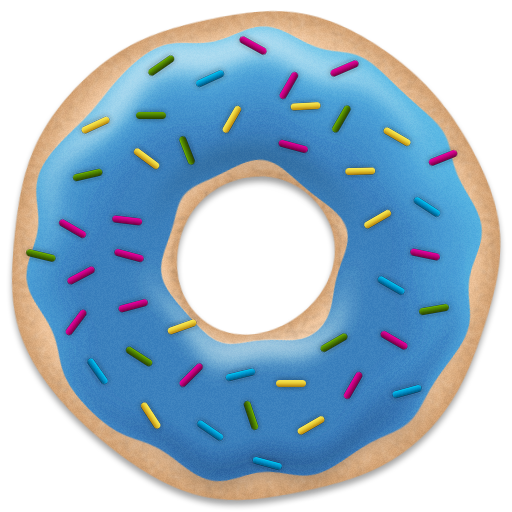
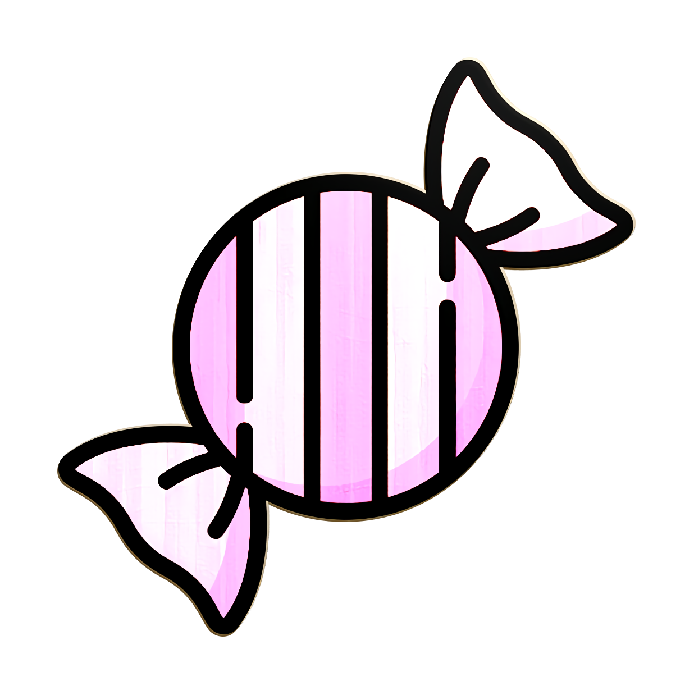
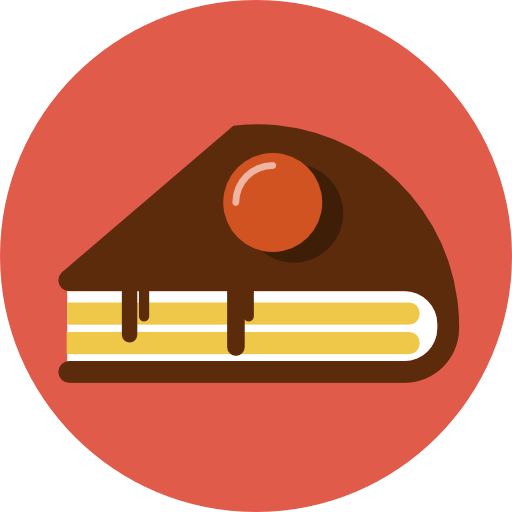
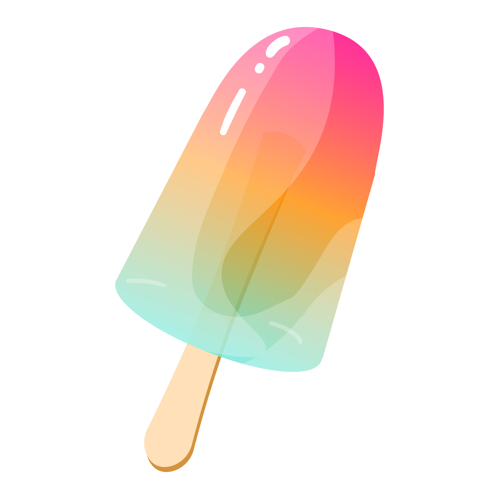

Meats, Not Sweets
Did you know cats can't taste sweetness? Here are some treats
they can't taste:

Donuts
A small fried cake of sweetened dough, usually in the
shape of a ring.

Candy
A sweet food that features sugar as the primary
ingredient.

Cake
A carefully calculated motivational device may or may
not exist.

Popsicles
A piece of flavored ice or ice cream on a
stick.